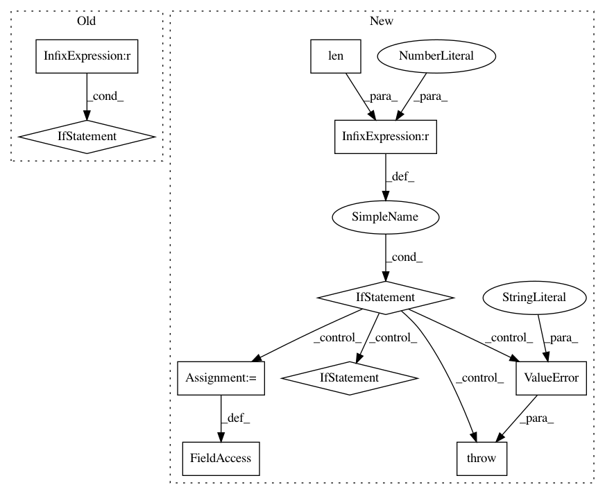

d15d9ad19021a8a3f26a86fbc6b71838ac37e7d1,pymc3/distributions/multivariate.py,MvNormal,__init__,#MvNormal#Any#Any#Any#Any#,97
Before Change
self.tau = tt.as_tensor_variable(tau)
self.cov = tt.as_tensor_variable(cov)
self.gpu_compat = gpu_compat
if gpu_compat is False and theano.config.device == "gpu":
warnings.warn("The function used is not GPU compatible. Please check the gpu_compat flag")
def random(self, point=None, size=None):
mu, cov = draw_values([self.mu, self.cov], point=point)
def _random(mean, cov, size=None):
After Change
def __init__(self, mu, cov=None, tau=None, chol=None, *args, **kwargs):
super(MvNormal, self).__init__(*args, **kwargs)
if len([i for i in [tau, cov, chol] if i is not None]) != 1:
raise ValueError("Incompatible parameterization. Specify exactly "
"one of tau, cov, or chol to specify "
"distribution.")
self.mean = self.median = self.mode = self.mu = tt.as_tensor_variable(mu)
self.solve = tt.slinalg.Solve(A_structure="lower_triangular", lower=True)
self.has_tau = tau is not None
if cov is not None:
self.chol_cov = tt.slinalg.cholesky(tt.as_tensor_variable(cov))
elif tau is not None:
self.chol_tau = tt.slinalg.cholesky(tt.as_tensor_variable(tau))
else:
self.chol_cov = tt.as_tensor_variable(chol)
In pattern: SUPERPATTERN
Frequency: 3
Non-data size: 10
Instances
Project Name: pymc-devs/pymc3
Commit Name: d15d9ad19021a8a3f26a86fbc6b71838ac37e7d1
Time: 2017-03-30
Author: jonathan.h.friedman@gmail.com
File Name: pymc3/distributions/multivariate.py
Class Name: MvNormal
Method Name: __init__
Project Name: masa-su/pixyz
Commit Name: 161ae41bebc73c146627169f761e3c4ddf83e5d4
Time: 2020-10-26
Author: kaneko@weblab.t.u-tokyo.ac.jp
File Name: pixyz/losses/losses.py
Class Name: Divergence
Method Name: __init__
Project Name: keras-team/keras
Commit Name: 023331ec2a7b0086abfc81eca16c84a1692ee653
Time: 2017-02-09
Author: francois.chollet@gmail.com
File Name: keras/layers/convolutional.py
Class Name: Convolution2D
Method Name: build